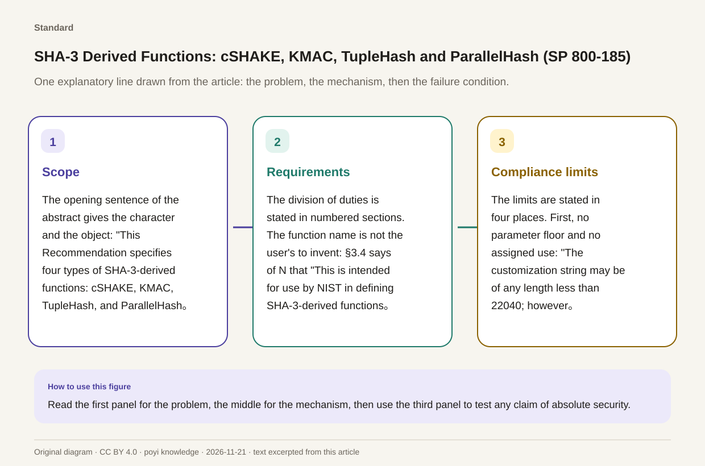
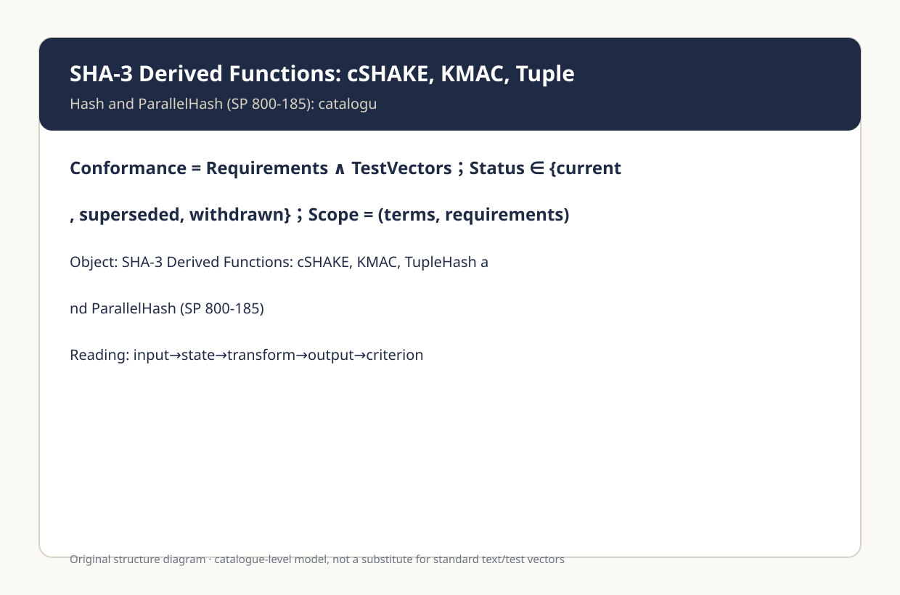

Principles
Standard: SHA-3 Derived Functions: cSHAKE, KMAC, TupleHash and ParallelHash (SP 800-185) (SHA-3 派生函数：cSHAKE、KMAC、TupleHash 与 ParallelHash（SP 800-185）). The opening sentence of the abstract gives the character and the object: "This Recommendation specifies four types of SHA-3-derived functions: cSHAKE, KMAC, TupleHash, and ParallelHash, each defined for a 128- and 256-bit security strength." The four are then self-described one by one: "cSHAKE is a customizable variant of the SHAKE function, as defined in Federal Information Processing Standard (FIPS) 202.", "KMAC (for KECCAK Message Authentication Code) is a variable-length message authentication code algorithm based on KECCAK; it can also be used as a pseudorandom function.", "TupleHash is a variable-length hash function designed to hash tuples of input strings without trivial collisions." and "ParallelHash is a variable-length hash function that can hash very long messages in parallel." What is specified is four function families in two strength tiers, all derived from FIPS 202. The abstract's range stops there: four families, two tiers, one self-description each, no value prescribed for any protocol, and no definition of KECCAK or SHAKE themselves, since FIPS 202 is the upstream standard and this file works at the layer of derived functions.

Why it matters
Section 1 states the gap as domain separation: "Domain separation ensures that different named functions (such as SHA3-512 and SHAKE128) will be unrelated." It then explains what customization buys: "Customization is analogous to strong typing in a programming language; such customization makes it extremely unlikely that computing one function with two different customization strings will yield the same answer." The other three families answer to a second gap: "It then defines three additional SHA-3-derived functions, in Secs. 4 through 6, that provide new functionality not directly available from the more basic functions." The risk is therefore one thing seen twice: without domain separation outputs for different purposes may be related, and with the name N and the customization string S two computations can be treated as unrelated functions.
Applications
The division of duties is stated in numbered sections. The function name is not the user's to invent: §3.4 says of N that "This is intended for use by NIST in defining SHA-3-derived functions, and should only be set to values defined by NIST", and addresses users directly: "Users of cSHAKE should not make up their own names--that kind of customization is the purpose of the customization string S, to be discussed in Sec. 3.5." Section 3.5 hands the choice of S to the caller: "The cSHAKE function also includes an input string (S) to allow users to customize their use of the function." Across that division the tiers are fixed: "cSHAKE, KMAC, TupleHash, and ParallelHash are all defined for two claimed security strengths: 128 bits and 256 bits." The two parameters therefore sit at different levels: N is NIST's to define and users are advised not to invent names, both in should-level wording, while S is the caller's to choose — §3.5 gives only examples and lets implementations restrict its length, and no customization string is prescribed here for any use.

Limits & attacks
The limits are stated in four places. First, no parameter floor and no assigned use: "The customization string may be of any length less than 22040; however, implementations may restrict the length of S that they will accept." (the retained extraction drops the superscript: the bound prints as 22040 where the document gives 2 to the power 2040, and the same file renders right_encode’s validity condition ) — the values remain the caller's choice, and this Recommendation assigns none to a use. Second, the cost of overstepping: "Nonstandard values of N could cause interoperability problems with future NIST-defined functions." Third, a property cSHAKE lacks: "Note that cSHAKE does not share this property." and "For q1< q2, cSHAKE(X, q1, N, S) is a prefix of cSHAKE(X, q2, N, S)." — a short output is merely a prefix of a long one, unlike the other three families where changing the length changes the function. Fourth, the implementation boundary: "An implementation of cSHAKE may reasonably support only input strings and output lengths that are whole bytes; if so, a fractional-byte input string or a request for an output length that is not a multiple of 8 would result in an error." The functions are specified; how a protocol uses them is not, and one appendix marks itself non-normative: "Appendix B--Hashing into a Range (Informative)".
History
The first title-block line reads "NIST Special Publication 800-185", the author and division lines read in sequence as "John Kelsey Shu-jen Chang Ray Perlner Computer Security Division Information Technology Laboratory", and the free-access line reads "This publication is available free of charge from:" followed by the DOI 10.6028/NIST.SP.800-185. The citation inside the Authority block carries the date and length: "Natl. Inst. Stand. Technol. Spec. Publ. 800-185, 32 pages (December 2016)", and the same block bounds application: "such standards and guidelines shall not apply to national security systems without the express approval of appropriate federal officials exercising policy authority over such systems". The keyword line reads "authentication; cryptography; cSHAKE; customizable SHAKE function; hash function". The acknowledgements name the reviewers from the KECCAK team: "The authors thank the KECCAK team members: Guido Bertoni, Joan Daemen" — the next name carries a diacritic in the retained text, quoted here outside the name — plus "The authors also thank their colleagues for reviewing drafts of this document and contributing to its development." Together these are the front-matter facts of this file: the publication number, the three authors and their division, the free-access DOI line, the citation carrying its page count, and the outside reviewers named in the acknowledgements; the text claims no supersession of an earlier edition.
Worked example & verification
Formal model and reproduction steps
[S=\min_i S_i,\quad S_i\in{\text{密钥强度},\text{分组安全},\text{实现安全}}]
SHA-3 Derived Functions: cSHAKE, KMAC, TupleHash and ParallelHash (SP 800-185): the registered public parameters, key material or randomness, and message are mapped through the stated transformation to an output checked against the registered criterion. The worked example is a structural reproduction, not a new test vector; parameter ranges, standard versions and implementation details remain source-bound.
References
- Wikipedia search entry for SHA-3 派生函数：cSHAKE、KMAC、TupleHash 与 ParallelHash（SP 800-185）. https://zh.wikipedia.org/w/index.php?search=SHA-3%20%E6%B4%BE%E7%94%9F%E5%87%BD%E6%95%B0%EF%BC%9AcSHAKE%E3%80%81KMAC%E3%80%81TupleHash%20%E4%B8%8E%20ParallelHash%EF%BC%88SP%20800-185%EF%BC%89
- Handbook of Applied Cryptography (Menezes, van Oorschot, Vanstone). https://www.cacr.math.uwaterloo.ca/hac/